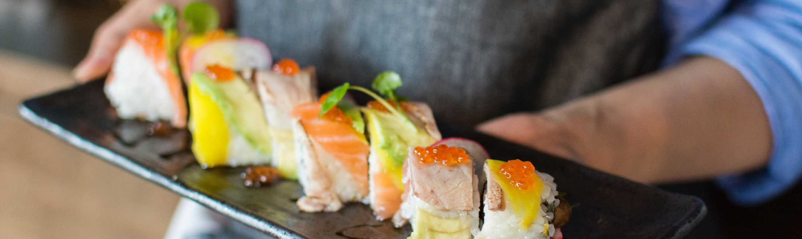

NEWS

私覓主理人與多位摯友於1989年參加一場私廚派對，於派對中享用的鮮美食材仍深刻於心，多年後再度憶起來當年的感動，私覓主理人與專業團隊共同開發秋季限定料理，希望再次復刻最初的感動。以鰹魚為食，輔以柑橘類的柚子醬『ポン酢』調味，再加一點梅子提味，提升整體的層次感。秋天的味蕾－松茸ごはん（松茸飯）」，使用昆布高湯，並將松茸與其他像是銀杏果等食材一同放進炊飯器煮。而秋天更不能錯過柿子、水梨，私覓嚴選千葉縣水梨，於前菜至主食期望帶給預約私覓的顧客，能和私覓主理人一同回到1989年的秋天，體驗這份私藏的心意。